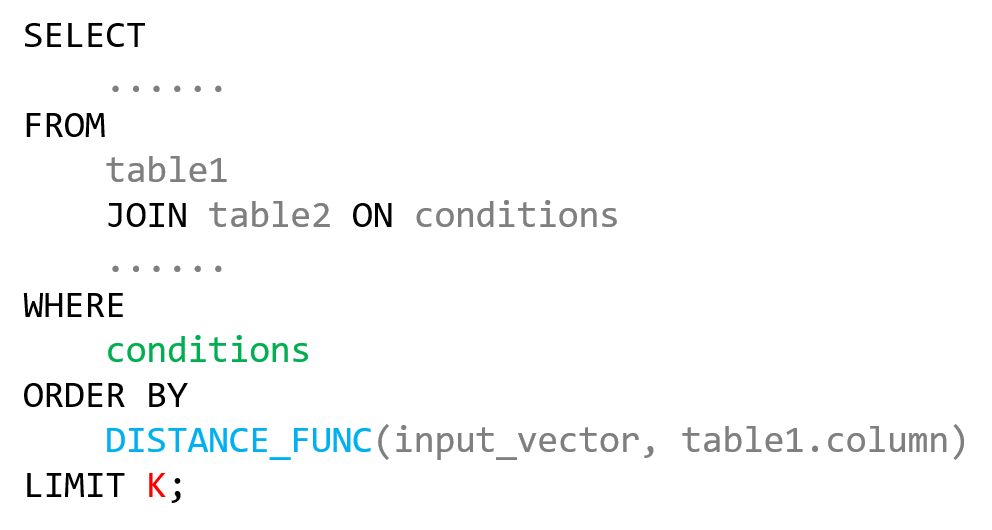

Benchmark for Hybrid Query
of Boolean Filter and Vector Similarity Search
With the increasing popularity of Large Language Models (LLMs) represented by ChatGPT, vector similarity search has become an important part of modern database systems. Usually, the real-world queries are hybrid, which means they contain both boolean filters and vector similarity search. For example, in a product search system, users may want to search products with an image and a price range. However, the current benchmarks for vector similarity search, such as SIFT [1], do not support hybrid queries. To fill this gap, we propose a new benchmark for hybrid query of boolean filter and vector similarity search. We hope this benchmark can help researchers and engineers to evaluate the performance of their systems and to develop new algorithms.
Introduction
The benchmark contains two datasets, one contains single table, and the other involves join multiple tables. The first dataset is based on the Danish Fungi [2], and the second dataset is based on the Cornell Movie-Dialogs Corpus [3]. These two datasets are in the field of computer vision and natural language processing, respectively, and both have rich metadata.
We processed the original datasets and generated the benchmark datasets. The metadata are in the form of CSV files, and the images and texts are processed into 768-dimensional vectors using ViT [4] and BERT [5] respectively. The boolean expressions are generated based on the metadata, and we guarantee that the number of rows that satisfy the boolean expressions is bigger than 100. The vectors in the datasets are in the form of numpy array [6], you can use the numpy library to load the vectors.
Both of the datasets are divided into base set, learn set and test set. The base set contains vectors and metadata, the learn set and test set contains vectors and boolean expressions. For each query in the learn set and test set, we provide the top-100 rows that satisfy the boolean expressions, ordered by the L2 distance of query vector and base vectors. The learn set is used to tune the parameters of the system if necessary, and the test set is used to evaluate the performance of the system.
When it comes to the evaluating metrics, usually we use the recall to evaluate the performance of the pure vector similarity search. In the hybrid queries, since the boolean filter is also involved, we must guarantee that the rows returned by the system satisfy the boolean expressions. Therefore, we propose a new metric, called hybrid recall, to evaluate the performance of the system. The hybrid recall is defined the intersection of the number of rows returned by the system that satisfy the boolean expression with the reference results, divided by K in K-NN search, which is 100 in this benchmark. The hybrid recall is between 0 and 1, and the bigger the better.
The benchmark is open-source and can be downloaded from this page. We hope that the benchmark can help researchers and engineers to evaluate the performance of their systems and to develop new algorithms.
Disclaimer
The original license of Danish Fungi Dataset is here and the original license of Cornell Movie-Dialogs Corpus is here, please comply with the original open source license of the dataset.
References